œuvres 1982-1985
dessins
livres d'artiste
Poterie de Ciboure
le Pays Basque
biographie
expositions
bibliographie
liens
"Etudes pour une maternité" - 1988
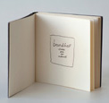
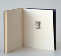
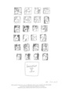
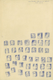
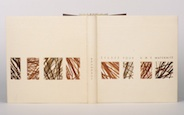
"Chapeaux" - 2005
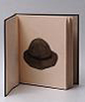
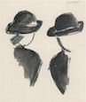
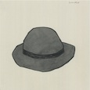
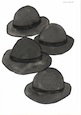
"La Poterie d'Art de Ciboure" - 2011
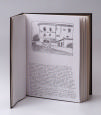
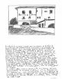
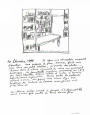
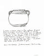
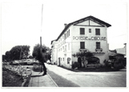
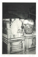
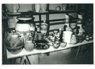